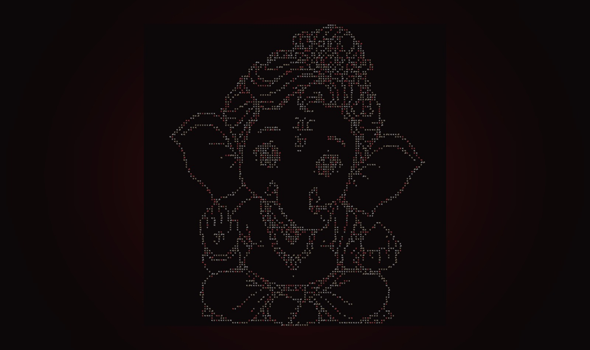
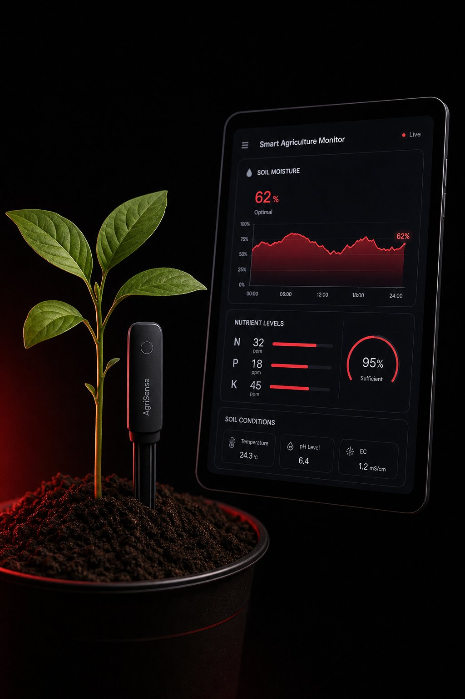
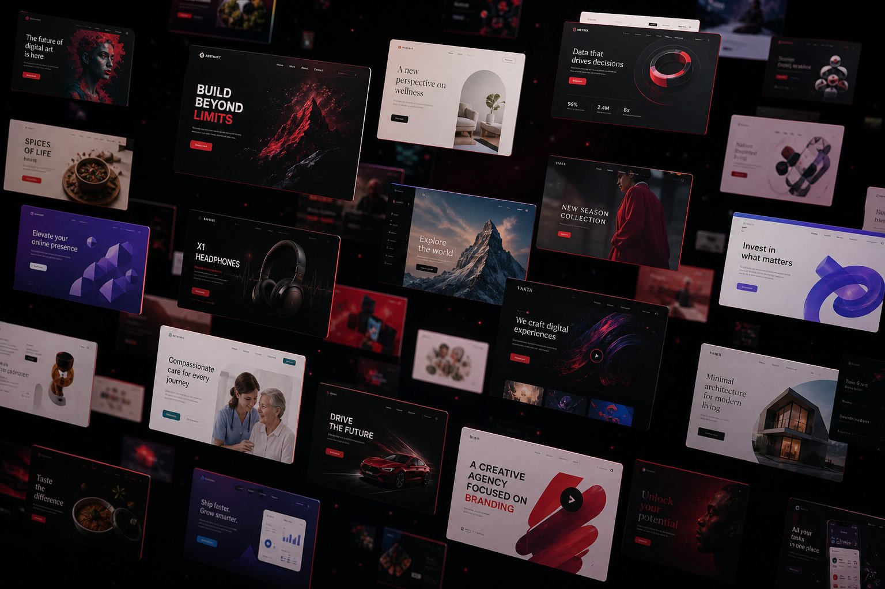

Projects
Things I have built
Featured Work
View more projects →
MediScan AI
AI Health Assistant — medical scans, reports aur symptoms ko analyze karta hai. Complete project.
- Python
- Machine Learning
- Image Analysis

Pastel Calculator
Calculator PWA · JavaScript

Devanagari Ganesha
Generative Art · Python + JS

Soil Pulse
Smart Agriculture Monitoring — IoT + AI
- FastAPI
- React
- MySQL
- IoT

51 Web Projects
Practice Vault · Fork